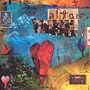

Celtic Lyrics Corner > Artists & Groups > Altan > Runaway Sunday > A Moment In Time
|  | A Moment In Time |
| Credits : | Mairéad Ní Mhaonaigh & Mark Kelly; arranged by Altan |
| Appears On : | Runaway Sunday |
| Language : | English |
Lyrics :
A moment in time, rosin the bow
Sound the strings of years ago
A sunlit room at Glenties fair
A traveller plays a haunting air
A story told, the laughter peel
The fiddler strikes another reel
The music lifts, the tapping toe
The listeners call for "Séan sa Cheo"
Feel his art lift the heart
Sense the spirits rise and fall
A fiddler plays in Donegal
The story resounds, the tune rings on
The given note, the given song
And now a child lifts the master's bow
A moment in time from years ago
Feel his art lift the heart
Sense the spirits rise and fall
A fiddler plays in Donegal